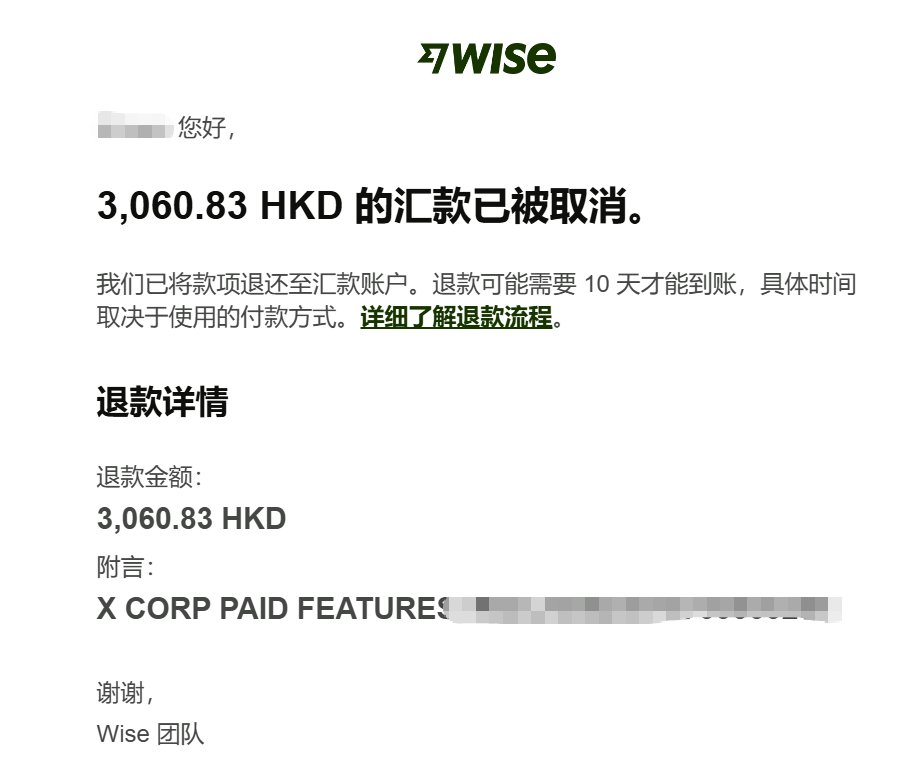
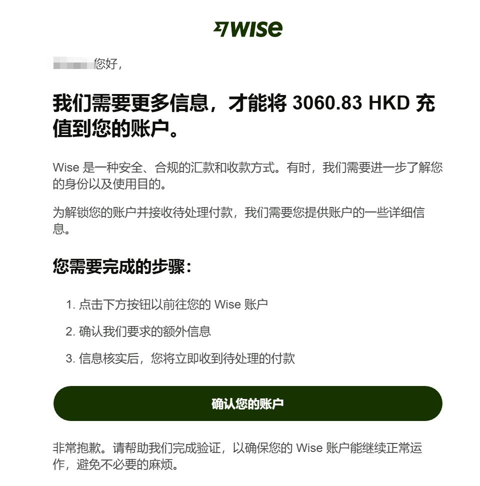

奶昔🥤
@realNyarime
@binghe 建议搞个港卡 wise风控从去年开始变严格了
甚至改区都不能自助，得找客服还会关户


冰河
@binghe
注意，所有在X(推特）上有创作收益的朋友 ！如果你用的是Wise 开的港卡收钱的帐户！
一定去看看邮件，是否有推特的汇款被退回了！
如果有，马上与Wise客服联系 。也同时看邮件，应该还有一个让你确认账户的邮件。。赶快去点了，完成最后的确认。
不然这钱你还是收不到！ https://t.co/INDmdhXard